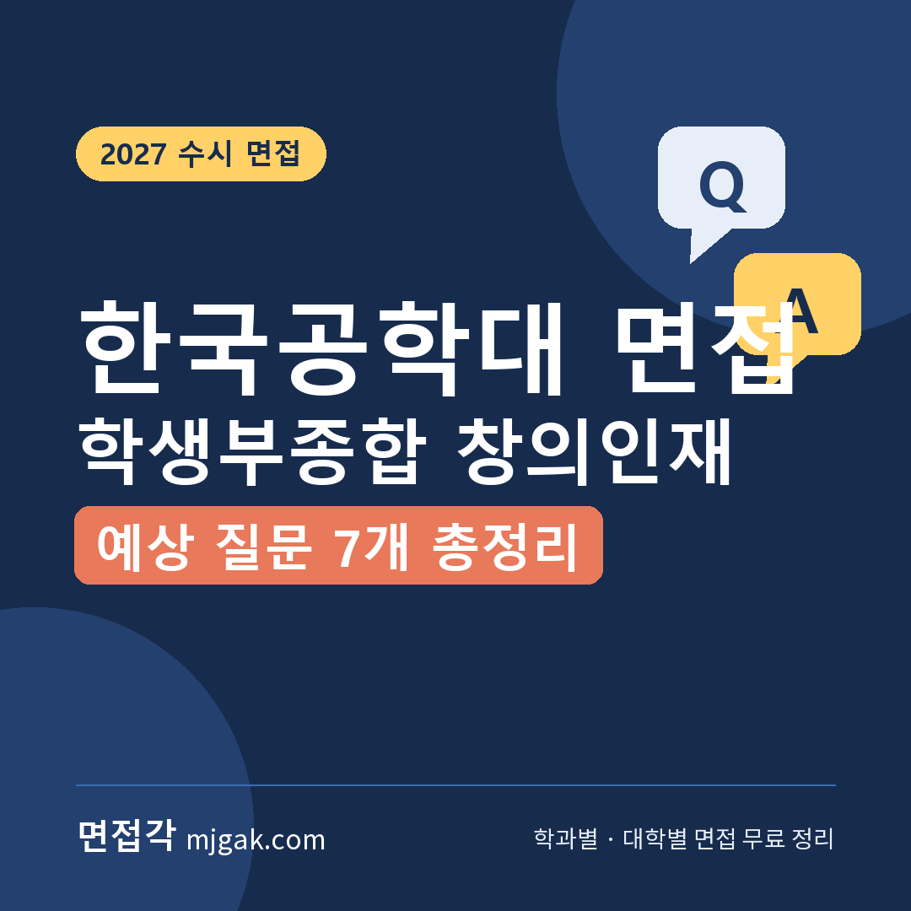
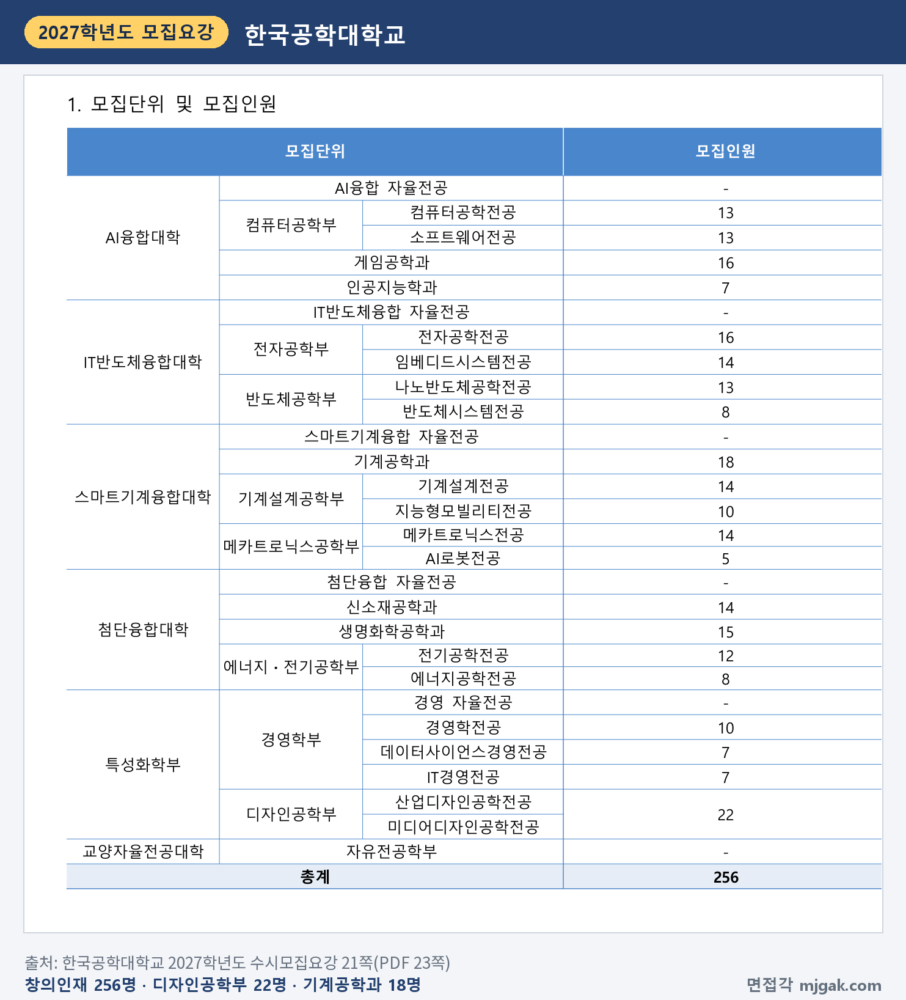
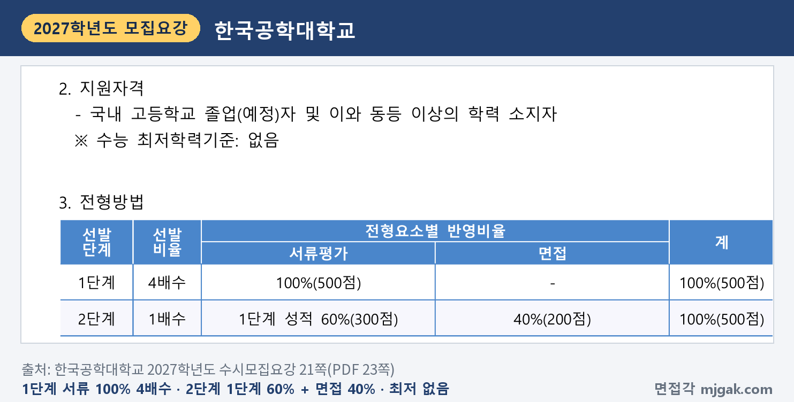
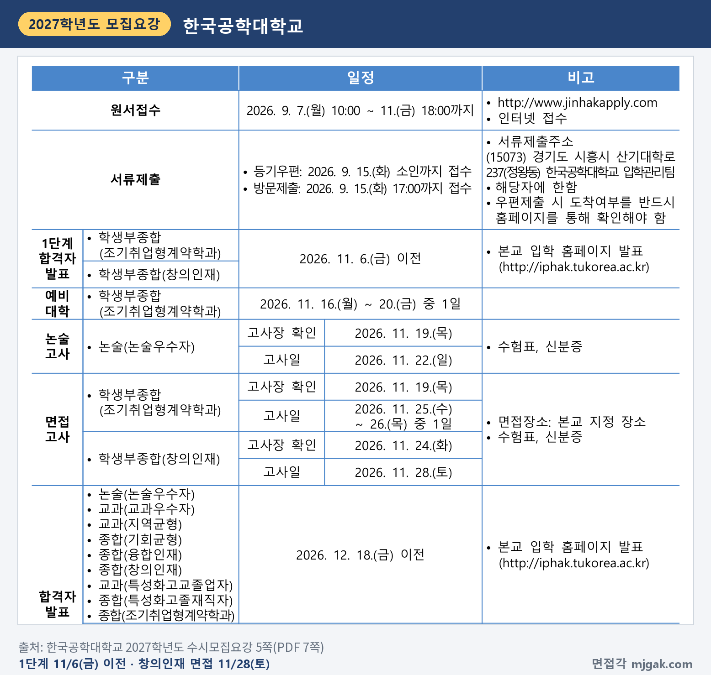
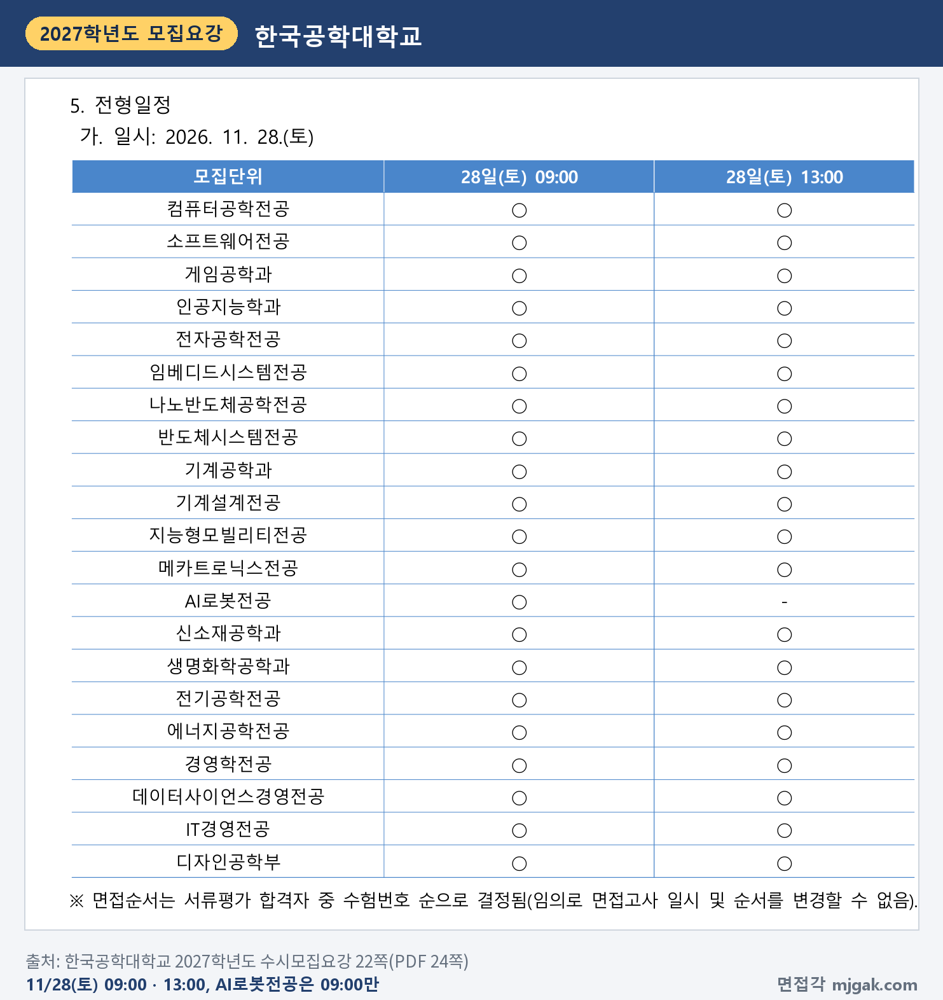
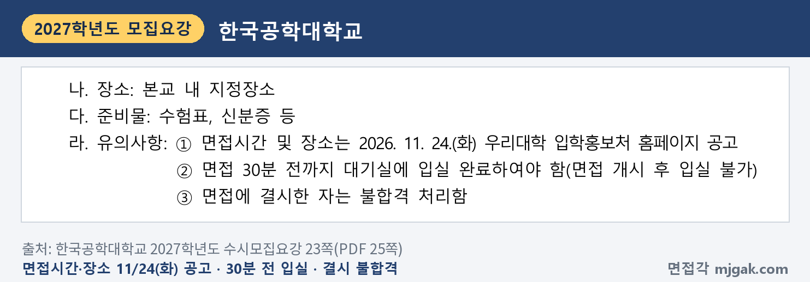
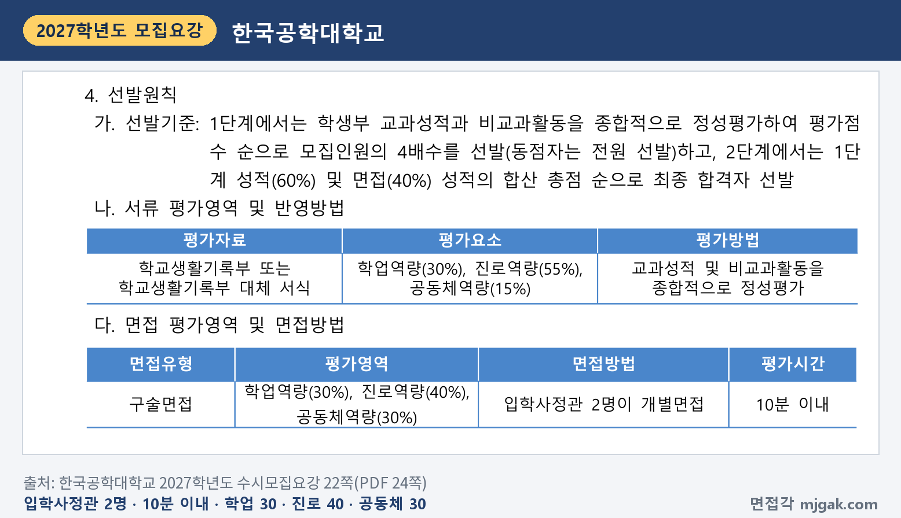
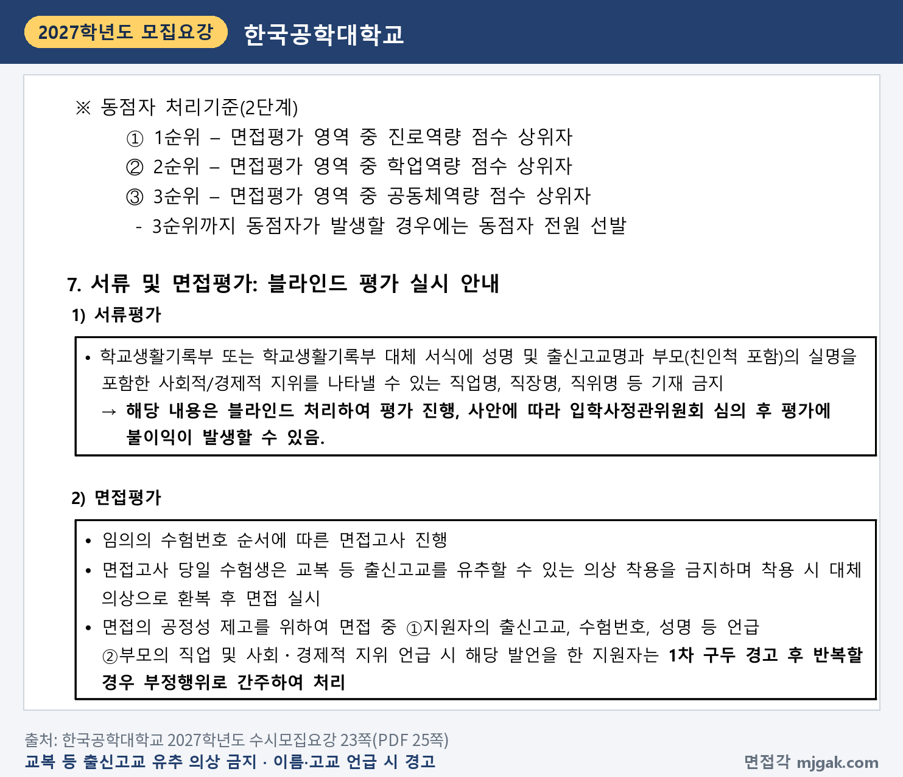
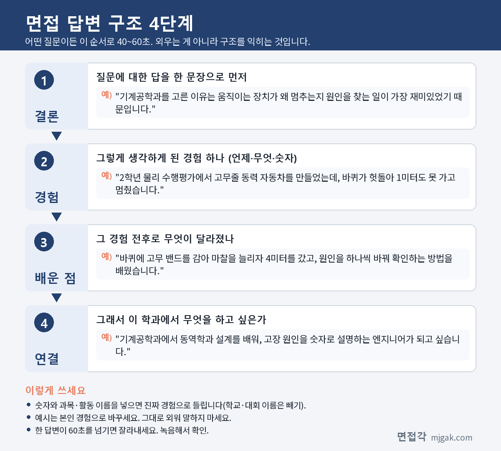

Ctrl+V (서식 유지됨)제목
본문 (이 영역 전체가 복사됩니다)
📷 여기에 이미지 넣기 — 썸네일 — thumb-tuk.png (대표 이미지로 지정)
한국공학대 학생부종합 창의인재에서 먼저 챙길 것은 1단계 발표가 수능보다 앞선다는 점입니다. 1단계 합격자 발표는 11월 6일(금) 이전, 수능은 11월 19일(목), 면접은 11월 28일(토)입니다. 2단계는 1단계 성적 60%와 면접 40%를 합산하고, 면접은 입학사정관 2명이 10분 이내로 보는 개별 구술면접입니다. 한국공학대 면접 기출을 찾는 분이 많아 대학이 낸 공개 자료도 확인했습니다. 한국공학대학교 2027학년도 수시모집요강과 2026학년도 선행학습 영향평가 자체 평가 보고서로 전형 방법, 일정, 면접 방식, 기출 공개 여부, 예상 질문 7개, 준비 순서를 정리했습니다. 창의인재에 지원한 고3과 재수생이 읽으시면 됩니다.
1. 창의인재, 2027학년도에는 어떻게 보나
창의인재는 학생부종합전형으로 256명을 뽑습니다. 인원이 많은 곳은 디자인공학부(산업디자인공학전공·미디어디자인공학전공) 22명, 기계공학과 18명, 게임공학과·전자공학전공 각 16명, 생명화학공학과 15명입니다. AI로봇전공은 5명입니다. 단과대학 자율전공, 경영 자율전공, 자유전공학부는 이 전형으로 뽑지 않습니다(21쪽). 2027학년도에는 전력응용시스템전공이 전기공학전공으로, 미래에너지시스템전공이 에너지공학전공으로 이름이 바뀌었습니다(2쪽).
📷 여기에 이미지 넣기 — 캡처 1 — 한국공학대학교 2027학년도 수시모집요강 21쪽(PDF 23쪽): tuk-2027-units.png
지원자격은 국내 고등학교 졸업(예정)자와 이와 동등 이상의 학력 소지자이고, 수능 최저학력기준은 없습니다. 1단계에서 서류평가 100%(500점)로 4배수를 뽑고, 2단계에서 1단계 성적 60%(300점)와 면접 40%(200점)를 합산합니다(21쪽). 1단계 동점자는 전원 선발합니다(22쪽). 이 글에서 모집인원에 4를 곱해 계산하면 디자인공학부 88명, 기계공학과 72명, AI로봇전공 20명이 1단계 합격 규모입니다(동점자는 전원 선발하므로 더 늘 수 있습니다).
📷 여기에 이미지 넣기 — 캡처 2 — 한국공학대학교 2027학년도 수시모집요강 21쪽(PDF 23쪽): tuk-2027-method.png
2단계 동점자는 면접평가 영역 중 진로역량, 학업역량, 공동체역량 점수 순으로 가리고, 3순위까지 같으면 전원 선발합니다(23쪽). 학교폭력 조치사항(1~9호)이 있으면 면접평가의 공동체역량(60점 만점)에 H(24점)를 줍니다(34쪽). 전형료는 65,000원(1단계 45,000원, 2단계 20,000원)이고, 1단계 불합격자에게는 2단계 전형료를 돌려줍니다(41쪽).
2. 언제 보나: 1단계는 수능 전, 면접은 수능 9일 뒤
- 11월 6일(금) 이전: 1단계 합격자 발표, 입학 홈페이지(iphak.tukorea.ac.kr)
- 11월 19일(목): 수능
- 11월 24일(화): 면접시간과 장소를 입학홍보처 홈페이지에 공고
- 11월 28일(토): 면접(09:00 또는 13:00)
- 12월 18일(금) 이전: 합격자 발표
(5·22·23쪽)
1단계 발표는 날짜가 아니라 "2026. 11. 6.(금) 이전"으로 적혀 있습니다(5쪽). 11월 6일보다 일찍 나올 수도 있으니 지금부터 입학 홈페이지를 수시로 확인하세요. 수능에서 면접까지는 9일입니다(이 글에서 계산한 값).
📷 여기에 이미지 넣기 — 캡처 3 — 한국공학대학교 2027학년도 수시모집요강 5쪽(PDF 7쪽): tuk-2027-schedule.png
면접은 11월 28일(토) 09:00과 13:00 두 번 있고, 21개 모집단위 중 AI로봇전공은 09:00에만 있습니다. 면접순서는 1단계 합격자 중 수험번호 순으로 정하고, 일시와 순서는 임의로 바꿀 수 없습니다(22쪽).
📷 여기에 이미지 넣기 — 캡처 4 — 한국공학대학교 2027학년도 수시모집요강 22쪽(PDF 24쪽): tuk-2027-times.png
장소는 본교 내 지정장소이고 수험표와 신분증 등을 챙깁니다. 면접 30분 전까지 대기실에 입실해야 하고 면접이 시작되면 들어갈 수 없습니다. 면접에 결시하면 불합격입니다(23쪽).
📷 여기에 이미지 넣기 — 캡처 5 — 한국공학대학교 2027학년도 수시모집요강 23쪽(PDF 25쪽): tuk-2027-notice.png
3. 면접은 어떻게 보나
면접유형은 구술면접이고, 입학사정관 2명이 개별면접으로 10분 이내에 평가합니다. 평가영역은 학업역량 30%, 진로역량 40%, 공동체역량 30%입니다(22쪽). 서류평가는 학업역량 30%, 진로역량 55%, 공동체역량 15%로 학생부 교과성적과 비교과활동을 종합해 정성평가합니다(22쪽). 서류와 면접 모두 진로역량 비중이 가장 큽니다.
📷 여기에 이미지 넣기 — 캡처 6 — 한국공학대학교 2027학년도 수시모집요강 22쪽(PDF 24쪽): tuk-2027-criteria.png
면접은 블라인드로 진행합니다. 면접 중 출신고교, 수험번호, 성명 등을 말하거나 부모의 직업과 사회·경제적 지위를 말하면 1차 구두 경고를 받고, 반복하면 부정행위로 처리합니다. 교복 등 출신고교를 짐작할 수 있는 옷은 입을 수 없고, 입고 오면 대체 의상으로 갈아입은 뒤 면접을 봅니다(23쪽).
📷 여기에 이미지 넣기 — 캡처 7 — 한국공학대학교 2027학년도 수시모집요강 23쪽(PDF 25쪽): tuk-2027-blind.png
4. 한국공학대 면접 기출, 공개된 것이 있나
공개된 기출 문항은 없습니다. 한국공학대가 2026년 3월에 낸 2026학년도 선행학습 영향평가 자체 평가 보고서에는, 창의인재 면접은 학교생활기록부를 바탕으로 블라인드 면접으로 치렀고, 면접 문항을 출제하지 않아 문항 카드를 작성하지 않았다고 적혀 있습니다(보고서 21·22쪽). 같은 보고서는 2026학년도 면접을 "의사소통 능력을 활용한 학교생활기록부 기반 면접"이라고 정리했습니다(보고서 23쪽). 2027학년도 모집요강에도 면접 질문 예시는 없고, 입학 전형 평가내용은 공개하지 않는다고 적혀 있습니다(36쪽).
5. 평가영역에서 나올 예상 질문 7개와 답변법
아래 7개는 대학이 공개한 질문이 아니라, 모집요강의 면접 평가영역(학업역량·진로역량·공동체역량)과 학생부 기반 면접이라는 보고서 내용으로 만든 예상 질문입니다. "○○"에는 내 학생부의 과목과 활동이 들어갑니다. 괄호의 평가영역은 이 글에서 연결한 것이고, 예시 답변은 모집단위를 바꿔 쓴 가상의 예시이니 본인 경험으로 바꾸세요.
▶ 질문 1. 이 전공을 고른 이유를 학생부 활동과 연결해 말해 보세요. (진로역량)
왜 묻나: 면접 평가영역에서 비중이 가장 큰 진로역량(40%)과 이어지고, 2단계 동점자 1순위도 면접 진로역량 점수입니다(22·23쪽).
답변 구조: 고른 이유 한 문장 → 관심을 확인한 학생부 장면 → 그때 알게 된 것 → 전공에서 배울 것.
답변 예시 (기계공학과):
"기계공학과를 고른 이유는 움직이는 장치가 왜 멈추는지 원인을 찾는 일이 가장 재미있었기 때문입니다. 2학년 물리 수행평가에서 고무줄 동력 자동차를 만들었는데, 바퀴가 헛돌아 1미터도 못 가고 멈췄습니다. 바퀴에 고무 밴드를 감아 마찰을 늘리자 4미터를 갔고, 원인을 하나씩 바꿔 확인하는 방법을 배웠습니다. 기계공학과에서 동역학과 설계를 배워, 고장 원인을 숫자로 설명하는 엔지니어가 되고 싶습니다."
주의: "어릴 때부터 기계를 좋아해서"로 끝내지 말고, 그 관심을 확인한 학교생활 장면을 붙이세요.
▶ 질문 2. 지원 전공과 가장 가까운 과목에서 무엇을 배웠고, 어려웠던 부분은 어떻게 공부했나요? (학업역량)
왜 묻나: 학업역량(30%)과 이어집니다. 서류평가도 교과성적과 비교과활동을 종합적으로 정성평가합니다(22쪽).
답변 구조: 과목과 배운 개념 하나 → 막혔던 부분 → 바꾼 공부 방법 → 전공 공부와 연결.
답변 예시 (나노반도체공학전공):
"반도체와 가장 가까운 과목은 물리학이었고, 에너지띠로 도체와 반도체를 나누는 내용이 기억에 남습니다. 처음에는 그림만 외워서 문제에 조건이 바뀌면 틀렸습니다. 그래서 교과서 그림을 백지에 다시 그리고, 전자가 어디로 옮겨 가는지 말로 설명해 보는 연습을 단원마다 했습니다. 나노반도체공학전공에서 소자가 작아질 때 성질이 어떻게 달라지는지 배우고 싶습니다."
주의: 과목 이름만 나열하지 말고, 배운 개념 하나와 공부 방법을 바꾼 이야기를 함께 하세요.
▶ 질문 3. 학생부에 적힌 ○○ 탐구 활동에서 본인이 직접 한 일은 무엇인가요? (진로역량·학업역량)
왜 묻나: 보고서가 밝힌 대로 학생부 기반 면접이라(보고서 23쪽), 학생부에 적힌 활동을 내 말로 설명하는 연습이 필요합니다.
답변 구조: 활동 주제 한 문장 → 내가 맡은 일 → 막힌 지점과 해결 → 결과 → 진로에 준 영향.
답변 예시 (인공지능학과):
"정보 시간에 모둠으로 급식 잔반량을 예측하는 프로그램을 만들었고, 저는 데이터 정리를 맡았습니다. 처음 두 달치 기록에는 날짜 형식이 섞여 있어 프로그램이 일부 기록을 읽지 못했습니다. 형식을 하나로 맞추고 빠진 날은 표시해 두자 예측 오차가 눈에 띄게 줄었습니다. 모델보다 데이터를 먼저 살펴야 한다는 것을 알게 됐고, 인공지능학과에서 데이터 처리와 기계학습을 함께 배우고 싶습니다."
주의: "저희 모둠은"으로 시작하면 내 역할이 흐려집니다. "저는 ○○을 맡았습니다"로 시작하세요.
📷 여기에 이미지 넣기 — 이미지 1 — 제미나이 생성: 멀리 바다가 보이는 창가 공학관 라운지에서 금속 기어·로봇팔 키트·실리콘 웨이퍼·노트북·게임 컨트롤러·비커·스케치북·동전과 막대그래프 옆에서 답하는 학생(실사), 한국공학대 상징색 블루·스카이블루·민트 / "제미나이 프롬프트 1"
(AI로 만든 이미지로, 실제 캠퍼스와 다를 수 있습니다)
▶ 질문 4. 실험이나 과제가 예상과 다르게 나온 적이 있나요? 그다음에 무엇을 했나요? (학업역량)
왜 묻나: 학업역량(30%)과 이어지는 질문입니다. 결과만 말하지 말고 원인을 찾은 과정을 순서대로 말해 보세요.
답변 구조: 예상과 결과 → 원인으로 짐작한 것 → 바꿔서 다시 해 본 것 → 배운 점.
답변 예시 (생명화학공학과):
"화학 실험에서 비타민C 음료의 양을 적정으로 비교했는데, 같은 음료인데도 조마다 결과가 크게 달랐습니다. 용액을 만든 뒤 시간이 지나면 비타민C가 산화된다는 것을 찾아보고, 용액을 만들자마자 측정하도록 순서를 바꿔 다시 했습니다. 그러자 조별 차이가 크게 줄었습니다. 실험 순서도 결과에 영향을 준다는 것을 배웠고, 생명화학공학과에서 공정 조건을 관리하는 법을 공부하고 싶습니다."
주의: "다시 열심히 했습니다"로 끝내지 말고, 무엇을 바꿨는지 하나를 분명히 말하세요.
▶ 질문 5. 모둠 활동에서 의견이 엇갈렸을 때 본인은 어떻게 했나요? (공동체역량)
왜 묻나: 공동체역량(30%)과 이어집니다.
답변 구조: 상황과 엇갈린 의견 → 내가 한 일 → 정한 방법과 결과 → 그 뒤 달라진 점.
답변 예시 (게임공학과):
"동아리에서 교내 행사용 미니 게임을 만들 때, 그래픽을 먼저 다듬자는 의견과 조작을 먼저 완성하자는 의견이 갈렸습니다. 저는 두 가지 버전을 일주일씩 만들어 친구들에게 해 보게 하자고 제안했습니다. 시험해 보니 조작이 불편하면 그래픽이 좋아도 금방 그만둔다는 답이 많아 조작부터 완성했습니다. 게임공학과에서 사용자 반응을 근거로 설계하는 방법을 배우고 싶습니다."
주의: 내가 이긴 이야기보다, 다른 의견을 어떻게 받아들였는지를 넣으세요.
▶ 질문 6. 방금 말한 활동에서 왜 그 방법을 골랐나요? (공동체역량·진로역량)
왜 묻나: 앞의 답을 짚어 다시 묻는 질문에 대비한 예상 질문입니다. 보고서는 2026학년도 면접을 "의사소통 능력을 활용한" 면접이라고 적었습니다(보고서 23쪽). 묻는 것에 첫 문장으로 답하세요.
답변 구조: 고른 이유 한 문장 → 다른 방법과 비교한 점 → 결과 → 다음에 바꿀 점.
답변 예시 (디자인공학부):
"사용자에게 직접 물어보는 방법을 고른 이유는, 제가 불편하다고 생각한 점과 실제 사용자가 불편한 점이 다를 수 있었기 때문입니다. 학교 분리수거함 안내판을 다시 디자인할 때 처음에는 제 생각대로 그림을 바꿨는데, 친구 열 명에게 물어보니 그림보다 색 구분이 더 헷갈린다는 답이 많았습니다. 그래서 칸마다 색을 다르게 바꿨습니다. 다음에는 처음부터 사용자 의견을 듣고 시작하겠습니다."
주의: 질문이 잘 이해되지 않으면 "○○을 여쭤보신 것이 맞을까요?"라고 확인해도 됩니다.
▶ 질문 7. 입학하면 무엇을 공부하고, 졸업 뒤에는 어떤 일을 하고 싶나요? (진로역량)
왜 묻나: 진로역량과 이어집니다. 지원 전공의 이름에 맞는 계획을 말하세요.
답변 구조: 1~2학년에 배울 것 → 해 보고 싶은 프로젝트 → 졸업 뒤 하고 싶은 일.
답변 예시 (데이터사이언스경영전공):
"1학년에는 통계와 프로그래밍 기초를 먼저 다지고 싶습니다. 고등학교 때 학급 매점 판매 기록을 표로 정리해 잘 팔리는 시간대를 찾은 경험이 있는데, 입학하면 이런 분석을 실제 기업 데이터로 해 보는 프로젝트에 참여하고 싶습니다. 졸업 뒤에는 숫자로 근거를 보여 주며 판매 전략을 제안하는 데이터 분석가가 되고 싶습니다."
주의: "열심히 공부하겠습니다" 대신 배우고 싶은 것 하나, 해 보고 싶은 것 하나로 말하세요.
6. 답변은 이 4단계로 만드세요
어떤 질문이든 결론 → 경험 → 배운 점 → 연결 순서로 40~60초 안에 말하세요. 아래 도식은 질문 1을 4단계로 쪼갠 것입니다.
📷 여기에 이미지 넣기 — 도식 — structure-tuk.png
7. 조기취업형계약학과는 11월 25일·26일 중 하루
정원외 학생부종합(조기취업형계약학과)은 스마트전자공학과 30명, AI소프트웨어학과 40명, IT융합디자인공학과 25명, 스마트그린소재공학과 25명, 모두 120명이고 산업체별 모집단위로 뽑습니다(29쪽). 3년(120학점) 과정이며 1학년 수료 후 참여기업과 고용계약을 맺습니다(29쪽). 1단계 서류 100%로 5배수, 2단계 면접 100%이고, 면접은 면접관 2명이 15분 이내로 성실성 25%, 직무적합성 50%, 공동체의식 25%를 평가합니다. 면접은 11월 25일(수)~26일(목) 중 1일, 시간과 장소 공고는 11월 19일(목)이고, 면접평가 총점 80점 이하이면 불합격입니다(29·30쪽).
8. 10월 25일(일)부터 면접 당일까지 준비 순서
10월 25일(일) ~ 11월 5일(목): 학생부를 읽고 지원 전공과 이어지는 과목, 탐구 활동, 모둠 활동을 세 개 고릅니다. 활동마다 "왜 시작했나, 내가 한 일, 막힌 점, 다음에 한 일"을 한 문장씩 적고 질문 1~7 초안을 만듭니다.
11월 6일(금) 이전, 1단계 발표: 입학 홈페이지에서 합격 여부를 직접 확인합니다. 개별 통보는 하지 않습니다(36쪽).
11월 7일(토) ~ 11월 18일(수): 수능 공부가 먼저입니다. 주말에 한 번, 10분을 재며 모의 면접을 녹음합니다.
11월 19일(목): 수능.
11월 20일(금) ~ 23일(월): 녹음을 다시 듣고 60초를 넘는 답, 이름·학교 이름·부모 직업이 나오는 답을 고칩니다.
11월 24일(화): 입학홍보처 홈페이지에서 내 면접시간과 장소를 확인합니다(23쪽).
11월 25일(수) ~ 27일(금): 입실 시각(면접 30분 전)과 가는 길을 확인합니다. 새 답변은 만들지 않습니다.
11월 28일(토), 면접: 수험표와 신분증을 챙기고, 교복 등 출신고교를 짐작할 수 있는 옷은 입지 않습니다(23쪽).
12월 18일(금) 이전: 합격자 발표. 합격했다면 12월 21일(월) ~ 23일(수) 16:00 문서등록을 놓치지 마세요(5쪽).
9. 한국공학대 창의인재 면접 자주 묻는 것들
Q. 창의인재와 다른 한국공학대 전형에 같이 지원할 수 있나요?
A. 됩니다. 한국공학대 수시모집은 6개 전형 이내에서 모든 전형 간 복수지원이 가능합니다(6·35쪽).
Q. 면접 시간을 바꿀 수 있나요?
A. 안 됩니다. 면접순서는 수험번호 순으로 정하고 임의로 일시와 순서를 바꿀 수 없습니다(22쪽).
Q. 제시문을 읽고 푸는 문제가 나오나요?
A. 모집요강에 제시문이나 문제 풀이 안내는 없습니다. 2026학년도 면접은 문항을 따로 출제하지 않은 학생부 기반 면접이었습니다(보고서 21·23쪽).
Q. 면접 복장은 어떻게 하나요?
A. 교복 등 출신고교를 짐작할 수 있는 옷은 금지이고, 입고 오면 대체 의상으로 갈아입습니다(23쪽). 그 밖의 복장 규정은 모집요강에 없습니다.
Q. 수능 최저가 있나요?
A. 없습니다(21쪽).
10. 면접 전날 체크리스트
□ 전공을 고른 이유를 학생부 장면 하나로 60초 안에 말할 수 있다
□ 지원 전공과 가까운 과목에서 배운 개념과 공부 방법을 말할 수 있다
□ 학생부 활동 세 개를 "내가 한 일, 막힌 점, 다음에 한 일"로 말할 수 있다
□ 녹음으로 이름·학교 이름·수험번호·부모 직업이 나오지 않는지 확인했다
□ 11월 24일(화) 공고에서 내 면접시간과 장소를 확인했다
□ 면접 30분 전 대기실 입실에 맞춰 출발 시각을 정했다
□ 수험표와 신분증을 챙겼고, 교복은 입지 않는다
11. 같은 시기에 면접 보는 대학
한국공학대와 같은 11월 28일에 면접을 보는 대학입니다.
▷ 서울과기대 학교생활우수자 면접 총정리 (11월 28일)
▷ 서울여대 바롬인재면접전형 면접 총정리 (11월 28일)
▷ 명지대 명지인재면접전형 면접 총정리 (11월 28일·29일)
12. 함께 보면 좋은 글
▷ AI·데이터사이언스학과 면접 질문 6가지와 답변 예시 총정리
창의인재 면접은 10분 이내에 학생부에 적힌 내 과목 선택과 활동을 내 말로 설명하고, 그 경험이 지원 전공으로 어떻게 이어지는지 보여 주는 자리입니다.
※ 이 글의 전형 내용은 한국공학대학교 2027학년도 수시모집요강에서, 2026학년도 면접 운영 내용은 한국공학대학교 입학홍보처가 낸 2026학년도 선행학습 영향평가 자체 평가 보고서에서 인용했습니다. 괄호 안 쪽수는 각 문서에 인쇄된 쪽수입니다. 한국공학대는 창의인재 면접 문항을 공개하지 않았고, 이 글의 질문 7개는 모집요강의 평가영역을 바탕으로 정리한 예상 질문이며 대학이 공개한 질문이 아닙니다. 면접시간과 장소는 11월 24일(화) 한국공학대 입학홍보처 홈페이지 공고를 꼭 확인하세요.
한국공학대를 포함한 76개 대학의 2027학년도 면접 정보와 71개 학과별 면접 질문·답변 예시, 대학이 공개한 실제 면접 기출을 무료로 정리한 사이트입니다. 회원가입 없이 바로 볼 수 있고, 질문을 무작위로 뽑아 60초 타이머로 연습하는 모의 면접도 있습니다.
태그 (#은 에디터가 자동으로 붙이므로 그대로 붙여 넣어도 됩니다)
넣을 이미지 목록 (docs/promo/img 폴더)









제미나이 프롬프트 1 — 멀리 바다가 보이는 창가 공학관 라운지에서 금속 기어·로봇팔 키트·실리콘 웨이퍼·노트북·게임 컨트롤러·비커·스케치북·동전과 막대그래프 옆에서 답하는 학생(실사), 한국공학대 상징색 블루·스카이블루·민트 (4:3) — 제미나이에 그대로 붙여 넣어 이미지를 만드세요